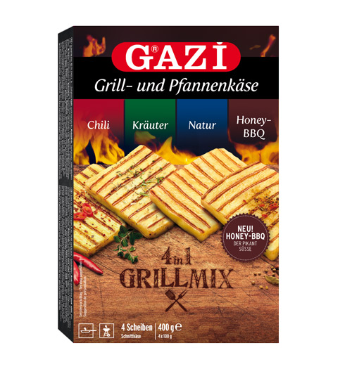

©2019 A Firma GmbH | Template by Bootstrapious.com & ported to Hugo by Kishan B
Queijo Coalho
 O queijo similar ao queijo coalho é o Grillkäse, que vende em todos os mercados e está perto dos itens para churrasco. Ele pode possui a versão temperada com ervas ou pimenta. Custa em torno de 2 € um pacote com dois queijos de 100g cada. Possui também versões maiores com mais pedaços de 100g.
Uma marca comum se chama Gazi.
Esse queijo também pode ser Halloumi, mas esse é exclusivamente feito da mistura de leite de cabra e ovelha. Ele é comum na Turquia e, por isso, é facilmente encontrado em Berlim. Também possui versões temperadas.
Muitas vezes o halloumi é chamado de Grillkäse e por isso há um certa confusão na nomenclatura. Não importa o nome, eles são firmes e continuam assim quando grelhados, por isso funcionam como substitutos.
Fonte da imagem: Queijo coalho na chapa Local: São Paulo - SP Data: 09/2007 Tombo: 04RC167 Autor: Rubens Chaves